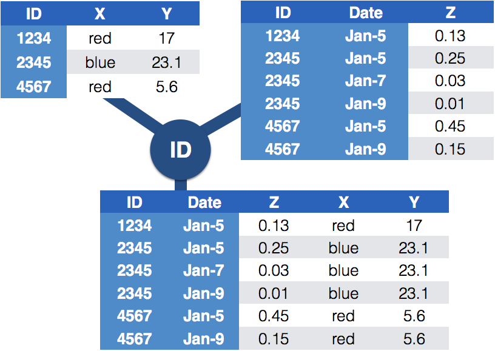

── Attaching core tidyverse packages ──────────────────────── tidyverse 2.0.0 ──
✔ dplyr 1.1.4 ✔ readr 2.1.5
✔ forcats 1.0.0 ✔ stringr 1.6.0
✔ ggplot2 4.0.1.9000 ✔ tibble 3.3.0
✔ lubridate 1.9.4 ✔ tidyr 1.3.1
✔ purrr 1.2.0
── Conflicts ────────────────────────────────────────── tidyverse_conflicts() ──
✖ dplyr::filter() masks stats::filter()
✖ dplyr::lag() masks stats::lag()
ℹ Use the conflicted package (<http://conflicted.r-lib.org/>) to force all conflicts to become errors
Logistics
Focus on homework 9: Murder in SQL City
Homework 9
Solve a murder!
Connection of homework 9 to joins
library(RSQLite)library(DBI)# Your database connection code goes here. Store the connection as con con <-dbConnect(RSQLite::SQLite(), "../homework-repos/09-join/sql-murder-mystery.db")table_names <-c("crime_scene_report", "drivers_license", "facebook_event_checkin","get_fit_now_check_in", "get_fit_now_member", "income", "interview","person")# For each table name, read the tables in and store them as the name of the tablepurrr::walk(table_names, function(x) {assign(x, dbReadTable(con, x), envir = .GlobalEnv)})# close the connection when you're donedbDisconnect(con)
Make sure to look at the relationship between the different data sets!
The first filter statement gives you enough information to start searching for witness statements.
crime_scene_report %>%filter(city=="SQL City", date ==20180115, type=="murder") %>%pluck("description") %>%cat()
Security footage shows that there were 2 witnesses. The first witness lives at the last house on "Northwestern Dr". The second witness, named Annabel, lives somewhere on "Franklin Ave".
Eventually you will be in the situation that you need to look up information from a different table based on a key variable. Instead of using a filter with that information, merge the two tables to directly incorporate the information from the other table.
Joining with by=
How do we join person and interview?
Variable id in person is linking to person_id in interview
person_interview <- person %>%left_join(interview, by=c("id"="person_id"))head(person_interview)
id name license_id address_number address_street_name
1 10000 Christoper Peteuil 993845 624 Bankhall Ave
2 10007 Kourtney Calderwood 861794 2791 Gustavus Blvd
3 10010 Muoi Cary 385336 741 Northwestern Dr
4 10016 Era Moselle 431897 1987 Wood Glade St
5 10025 Trena Hornby 550890 276 Daws Hill Way
6 10027 Antione Godbolt 439509 2431 Zelham Dr
ssn
1 747714076
2 477972044
3 828638512
4 614621061
5 223877684
6 491650087
transcript
1 <NA>
2 CHAPTER IV. The Rabbit Sends in a Little Bill\n
3 <NA>
4 \n
5 \n
6 nearer to watch them, and just as she came up to them she heard one of\n
Backup for a moment
General idea of joining tables

Difference between the joins
Data sets are joined along values of variables.
In dplyr there are several join functions: left_join, inner_join, full_join, …
Differences between join functions only visible, if not all values in one set have values in the other
Example
df1 <-data.frame(id =1:6, trt =rep(c("A", "B", "C"), rep=c(2,1,3)), value =c(5,3,7,1,2,3))df1
id trt value
1 1 A 5
2 2 B 3
3 3 C 7
4 4 A 1
5 5 B 2
6 6 C 3
id trt value stress bpm
1 1 A 5 NA NA
2 2 B 3 NA NA
3 3 C 7 NA NA
4 4 A 1 0 65
5 4 A 1 1 125
6 5 B 2 0 74
7 5 B 2 1 136
8 6 C 3 NA NA
Inner join
only matches from both data sets are kept
inner_join(df1, df2, by ="id")
id trt value stress bpm
1 4 A 1 0 65
2 4 A 1 1 125
3 5 B 2 0 74
4 5 B 2 1 136
Full join
all ids are kept, missings are filled in with NA
full_join(df1, df2, by ="id")
id trt value stress bpm
1 1 A 5 NA NA
2 2 B 3 NA NA
3 3 C 7 NA NA
4 4 A 1 0 65
5 4 A 1 1 125
6 5 B 2 0 74
7 5 B 2 1 136
8 6 C 3 NA NA
9 7 <NA> NA 0 48
10 7 <NA> NA 1 110
Traps of joins
sometimes we unexpectedly cannot match values: missing values, different spelling, …
join can be along multiple variables, e.g. by = c("ID", "Date")
joining variable(s) can have different names, e.g. by = c("State" = "Name")
always make sure to check dimensions of data before and after a join
check on missing values; help with that: anti_join
Anti join
careful, not symmetric!
anti_join(df1, df2, by="id") # no values for id in df2
id trt value
1 1 A 5
2 2 B 3
3 3 C 7
4 6 C 3
anti_join(df2, df1, by="id") # no values for id in df1